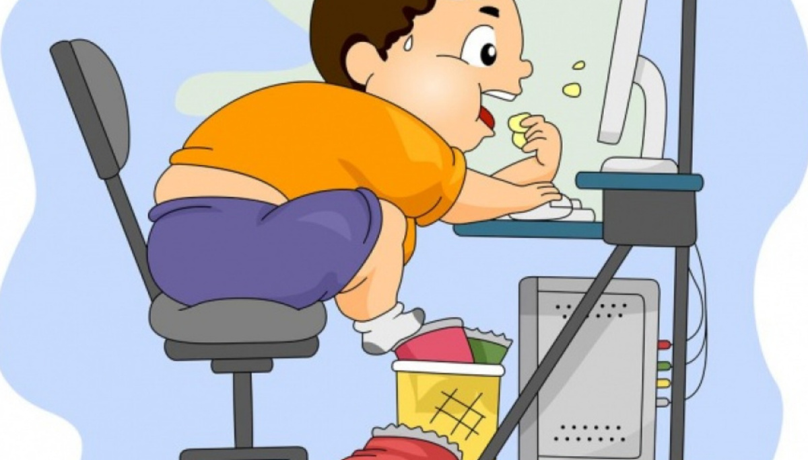
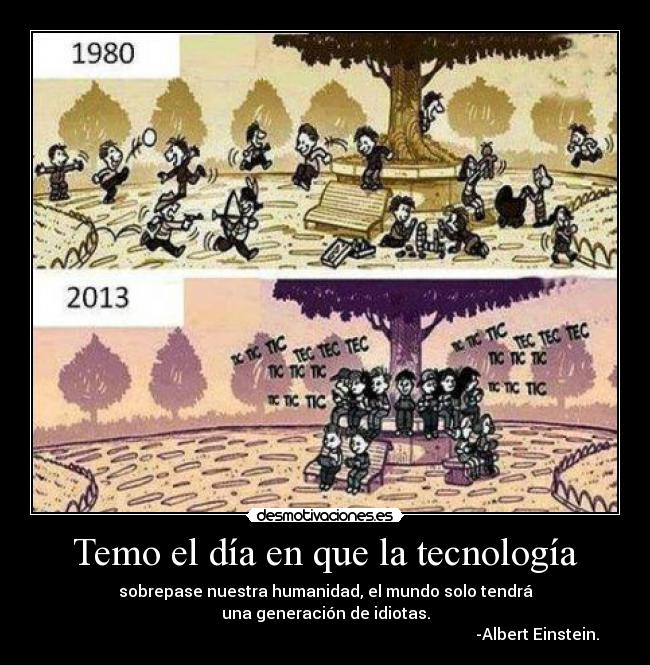
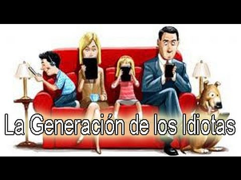
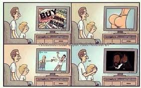
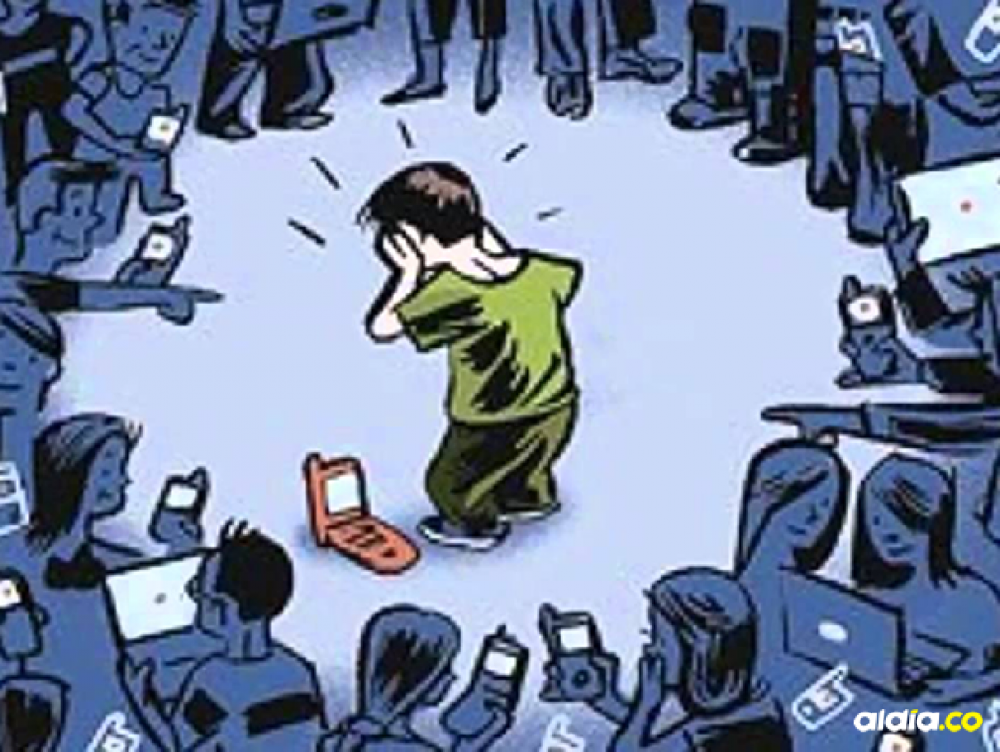

En la era digital actual, las tecnologías web han penetrado profundamente en todos los aspectos de nuestra vida cotidiana, desde cómo nos comunicamos y trabajamos hasta cómo consumimos información y nos entretenemos.
Sin embargo, este omnipresente avance tecnológico no está exento de consecuencias negativas que merecen una atención crítica. Si bien las herramientas web han facilitado la conectividad global y el acceso a una cantidad inmensa de información, también han generado una serie de efectos no deseados que impactan profundamente en la sociedad.
Desde problemas de salud mental hasta la proliferación de la desinformación y la erosión de la privacidad, los efectos negativos de las tecnologías web plantean desafíos significativos que requieren una reflexión cuidadosa y una acción deliberada.
Uno de los principales problemas es el sedentarismo. El uso excesivo de dispositivos electrónicos puede llevar a un estilo de vida sedentario, lo que contribuye a problemas de salud como la obesidad, la falta de ejercicio y el deterioro de la salud cardiovascular.
Además, el tiempo dedicado a la tecnología puede afectar negativamente las habilidades sociales de los niños y adolescentes. Pasar largas horas frente a una pantalla puede limitar las oportunidades de interactuar cara a cara con amigos y familiares, lo que puede dificultar el desarrollo de habilidades sociales importantes, como la empatía, la comunicación verbal y no verbal, y la resolución de conflictos.
La influencia negativa de la tecnología en adultos también es un tema importante a considerar en la sociedad actual. Aunque la tecnología ofrece una amplia gama de beneficios, su uso excesivo o inadecuado puede tener efectos perjudiciales en la vida de las personas adultas.
La tecnología puede tener un impacto en las relaciones interpersonales. El uso excesivo de dispositivos electrónicos durante el tiempo en familia o con amigos puede afectar la calidad de las relaciones y la comunicación. Además, la dependencia de la tecnología para la interacción social puede reducir las habilidades de comunicación interpersonal en persona.
Ademas de esos graves problemas que conlleva el uso excesivo de las Tecnologías Web y en especial de redes sociales, podemos encontrar afecciones tan graves como:
Ciberbullying: Una forma de acoso que se lleva a cabo a través de plataformas de redes sociales, donde individuos o grupos utilizan mensajes intimidatorios, amenazas o difamación para dañar emocionalmente a otros usuarios.
Contenido inapropiado: Las redes sociales pueden ser utilizadas para compartir contenido ofensivo, violento, sexualmente explícito o inadecuado, lo cual puede tener un impacto negativo en los usuarios, especialmente en los más jóvenes.
Desinformación y noticias falsas: Las redes sociales pueden ser un caldo de cultivo para la propagación de información errónea, rumores y noticias falsas, lo que puede conducir a la confusión, el pánico y la polarización en la sociedad.
Exposición a contenido perjudicial: Los algoritmos de recomendación de algunas redes sociales pueden llevar a los usuarios a consumir contenido extremista, radical, o que promueva comportamientos peligrosos, como la automutilación, la anorexia o el suicidio.
Adicción y obsesión: El diseño adictivo de algunas redes sociales, junto con la presión social y la validación constante a través de likes y comentarios, puede llevar a una obsesión por la plataforma y un uso excesivo que afecte la salud mental y el bienestar de los usuarios.
Exposición a depredadores en línea: Las redes sociales pueden ser utilizadas por depredadores en línea para contactar y manipular a niños y adolescentes, lo que puede poner en peligro su seguridad y bienestar.
 .......... 